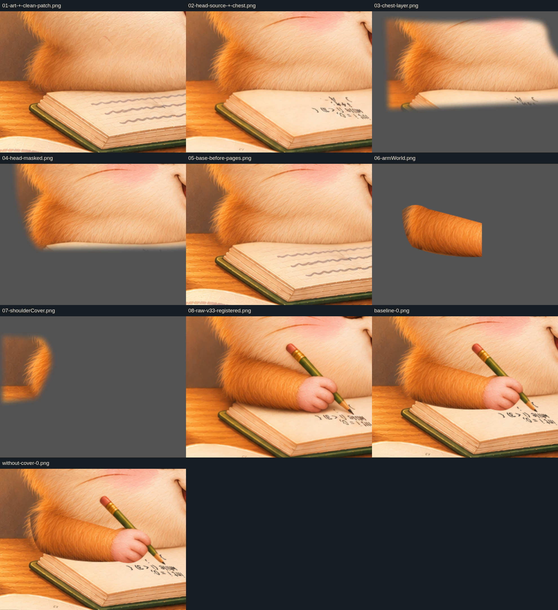

<!doctype html><meta charset="utf-8"><title>肩部静态连接隔离实验</title><style>body{background:#181d21;color:#eee8dc;font:16px/1.6 system-ui;margin:24px}main{max-width:1400px;margin:auto}img{max-width:100%;display:block}a{color:#b6d8cb}section{margin:32px 0}</style><main><h1>肩部静态连接：唯一候选未通过</h1><p>70% 暂定实验基准。t=0 新增暗弧与阶梯切口，因此未将修复用于后两个时刻。点击图片查看原尺寸。</p><p><a href="REPORT.md">报告</a> · <a href="checks.json">检查记录</a></p><section><h2>图层拆解 · 200%</h2><a href="layer-breakdown.png"></a></section><section><h2>t=0 · 左基准 / 右唯一候选（失败）</h2><a href="comparison-0.png"></a></section><section><h2>t=2.581 · 70% 未修复基准</h2></section><section><h2>t=3.8 · 70% 未修复基准</h2></section></main>